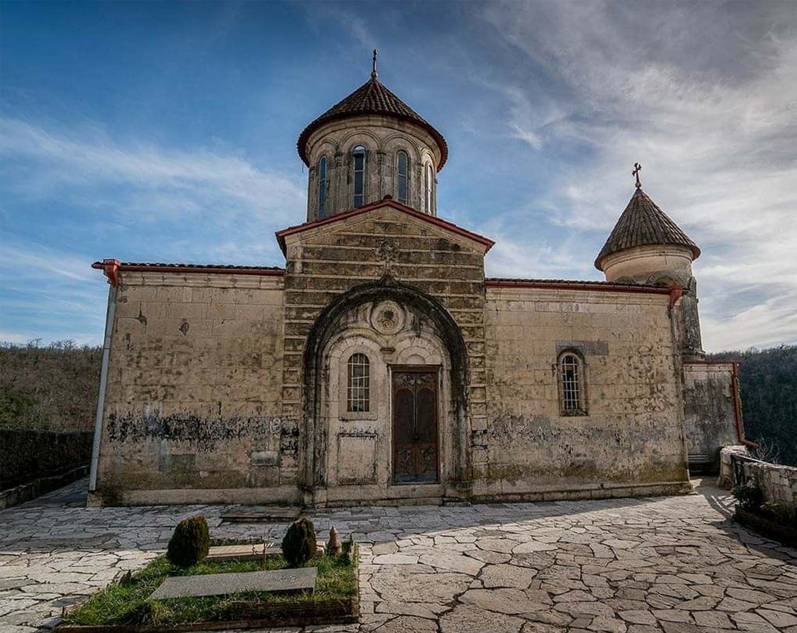
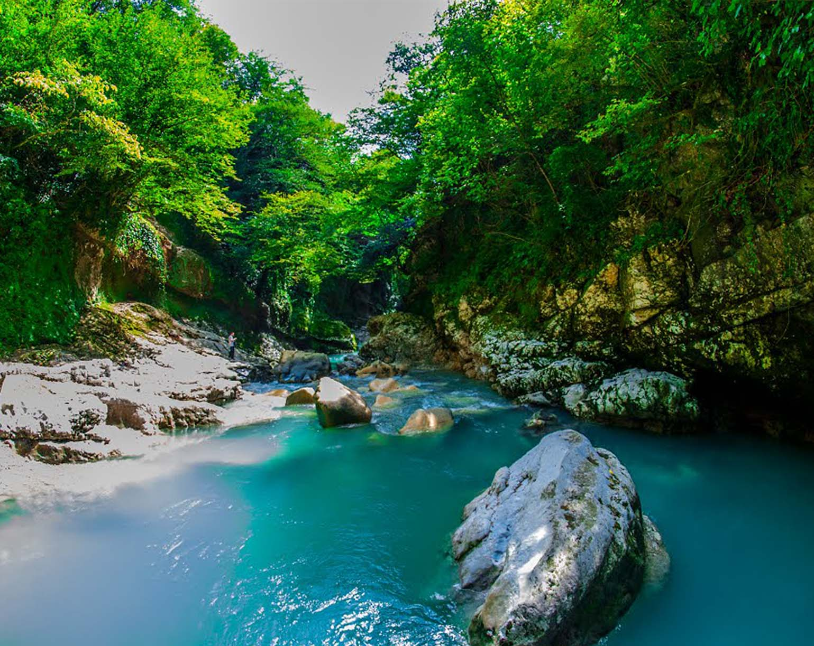

Имертия
Имеретия — это радушный и хлебосольный Кутаиси, древние монастыри, роскошные каньоны, высокие водопады, климатические курорты и многое-многое другое. В данной статье вы найдете исчерпывающий ответ на вопрос «что посмотреть в Имеретии?» как за 1-2 дня, так и за неделю. Кроме того, отдельная глава посвящена самым оптимальным маршрутам по Имеретии. Cтолицf имеретинского царства, Кутаиси, второй по величине город Грузии.
Имеретию называют краем аргонавтов. Согласно преданию именно здесь в Священной роще Ясон открыл чудо-дерево, на котором висело золотое руно, приносившее людям счастье и богатство. В этом лесу его охранял свирепый дракон. Царь Колхиды только ему доверял свое главное сокровище.В густых зарослях царил мрак. Ветви самшита, тиса, дубов были окутаны изумрудным мхом. А корни деревьев, словно змеи, переплетались между собою. Этот лес сохранился до наших дней. Ему много миллионов лет. В незапамятные времена на месте колхидского леса было огромное море. По мнению ученых, оно простиралась от Черного до Каспийского морей. Но постепенно вода стала уходить из этих мест, открывая толстый слой измельченного ракушечника. И на берег начали выходить доисторические животные. «Тут можно поверить в любую легенду, – говорят туристы. Ведь если человек включит воображение и фантазию, то ему открываются очень многие сказочные сюжеты и мифологические картины».
На основании исторических документов в конце 15 века Имеретия была отдельным самостоятельным царством со столичным городом Кутаиси. В 1555 году по результатам ирано-турецкого мира когда-то свободное Имеретинское государство стало подвластно османской Турции. В 18 веке цари Имеретинского царства не раз просили о помощи Российскую державу. В 1769 году Екатериной II в Западную Грузию были направлены российские войска под предводительством генерала Тотлебена. В результате военных действий Имеретия была освобождена от турецкого ига. В 1811 году бывшее царство стало Имеретинской областью, входящей в состав России. К достопримечательностям региона относятся крепости, храмы и музеи. Среди них турецкая крепость Тхмели в Багдати, дворец в Гегути, руины Варцихе, крепости в Шорапани, в Сачхере, Сулори, Ицкиси. На территории региона расположены 4 монастыря, среди которых Гелати, Моцамета, Убиси, Шио-Мгвиме. В известном заповеднике Грузии - Сатаплиа находятся карстовые пещеры, где были обнаружены следы динозавра. Самый крупный исторический музей региона находится в Кутаиси.